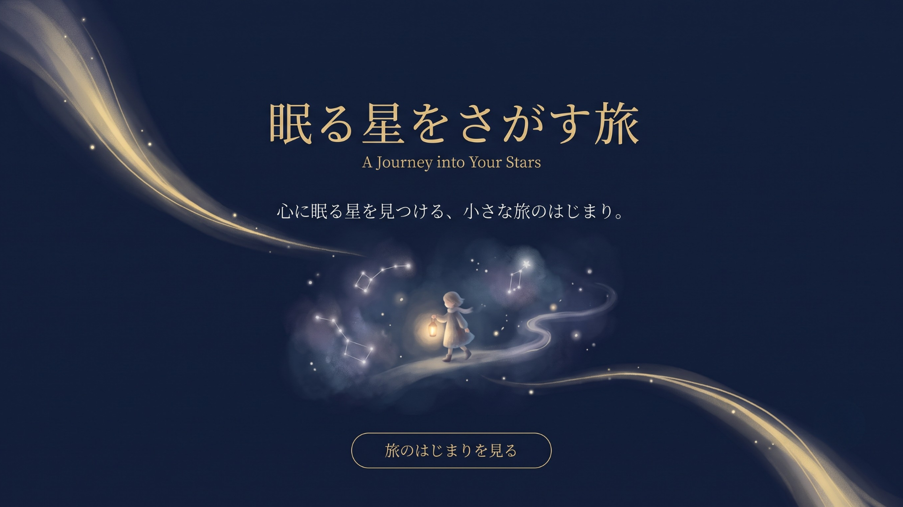

心にひびく言葉を、直感で選んでください。 見つけた星が増えるほど、あなただけの星座が少しずつ輝きを帯びていきます。
言葉の中に、あなたの星が隠れています。
今の自分に近いもの、なぜか心に残るものを、直感で選んでください。見つけた星が集まるほど、あなたの「星座」が少しずつ形を結んでいきます。
発見された星：0
YOUR CONSTELLATION
あなたの星座の猫たちを、LINEスタンプでも楽しめます。